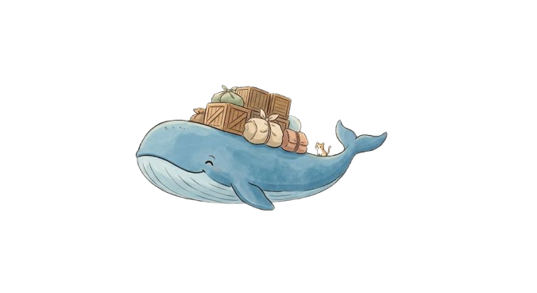
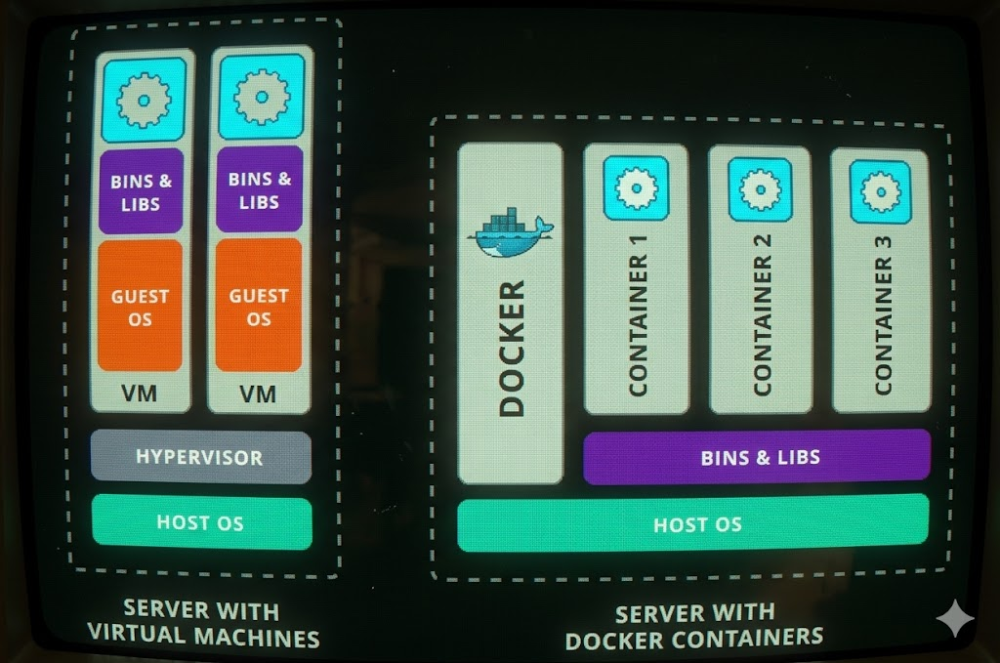

Aprenda contêinerização em profundidade técnica. Explore primitivas do kernel, cgroups, namespaces e pratique com simulador CLI.
guest@docker:~$ cat /docs/what-is-containerization.md
Contêinerização é a tecnologia que permite empacotar uma aplicação e todas as suas dependências em um único artefato isolado. Conheça os conceitos e primitivas que tornam isso possível:
guest@docker:~$ ./compare_architectures.sh --vm --container
Ambos isolam aplicações, mas de formas radicalmente diferentes. VMs virtualizam hardware inteiro. Containers compartilham o kernel do SO — muito mais eficientes.

| Característica | VM | Container |
|---|---|---|
| Abstração | Hardware físico | Kernel do SO |
| Tamanho típico | 1 – 20 GB | 5 – 500 MB |
| Tempo de boot | 30 s – 5 min | < 1 segundo |
| SO próprio | Sim (completo) | Não (compartilha kernel) |
| Overhead de CPU | Alto (emulação) | Quase zero |
| Overhead de memória | Alto (SO convidado) | Mínimo |
| Isolamento | Forte (hardware) | Bom (namespaces) |
| Portabilidade | Limitada | Total (qualquer host) |
guest@docker:~$ docker info --format '{{.ServerVersion}}'
Docker é a plataforma open-source líder mundial que revolucionou a engenharia de software ao padronizar como criamos, empacotamos e executamos aplicações em qualquer infraestrutura através de contêineres.
Escreva receitas sequenciais em arquivos de texto Dockerfile para compilar e empacotar seu código de forma determinística em imagens portáveis.
Standard: DockerfilePublique e distribua suas imagens no Docker Hub ou em Registries privados corporativos, facilitando a automação de pipelines de CI/CD.
Platform: Docker HubInicie instâncias seguras e totalmente isoladas (contêineres) a partir de imagens em segundos, aproveitando a performance nativa do Kernel host.
Runtime: dockerd / containerdguest@docker:~$ man docker-concepts
Três conceitos fundamentais formam a base de todo workflow Docker. Clique nas abas para explorar cada um em profundidade.
O Dockerfile é a receita da sua imagem — um arquivo de texto com instruções sequenciais. Cada instrução cria uma nova camada na imagem. Clique em uma linha para ver a explicação.
Enquanto o Dockerfile é a receita de construção, a Imagem é o pacote imutável compilado. Ela materializa na prática o conceito de camadas sobrepostas do UnionFS apresentadas no início. Cada instrução do Dockerfile gera uma camada de leitura estática (Read-Only) identificada por um hash único. A camada temporária gravável (Read-Write) só é criada quando o container é de fato executado.
Um container é a instância ativa e isolada de uma imagem. Sob o capô, ele é apenas um processo comum rodando diretamente no kernel host, mas blindado via Namespaces e com limites rígidos definidos por cgroups (as primitivas explicadas no primeiro slide). Você pode instanciar dezenas de containers a partir da mesma imagem, pois cada um possui sua própria camada gravável isolada.
Diferente de VMs, containers não carregam um sistema operacional completo. Eles compartilham o Kernel do sistema host, resultando em inicialização sub-segundo e uso mínimo de memória e CPU.
O container opera em seu próprio espaço de rede, arquivos e processos. Um processo rodando no container não consegue ver ou interferir com outros processos do host ou de outros containers.
Como todas as bibliotecas e binários necessários rodam encapsulados no container, o comportamento da aplicação é idêntico em qualquer máquina Linux, macOS ou Windows que suporte Docker.
O container possui um ciclo de vida estruturado gerenciado pela API do Docker Daemon. Cada comando altera o estado do processo principal do container. Explore os 5 status principais abaixo:
Estes são os comandos CLI essenciais para orquestrar o ciclo de vida e a inspeção de containers. Deslize para explorar cada console em formato de slider.
guest@docker:~$ git log --reverse --oneline history.git
Conheça a história e os marcos evolutivos que levaram um projeto interno de uma startup francesa em 2013 a se tornar o alicerce absoluto de toda a nuvem moderna.
guest@docker:~$ docker system info
Entenda como os principais blocos do ecossistema do Docker se articulam para buildar, armazenar e rodar suas aplicações de forma orquestrada.
guest@docker:~$ ./list_benefits.sh --dev --ops --team
Docker não é só uma ferramenta de deploy — transforma todo o ciclo de desenvolvimento, do setup local ao CI/CD em produção.
guest@docker:~$ cat docker-compose.yml
Veja como descrever e subir toda a sua stack local (Aplicação, Banco e Cache) com persistência de volumes e redes isoladas usando um único arquivo YAML.
guest@docker:~$ run_lab --interactive
Simule comandos Docker reais. Clique nos botões abaixo para ver o que acontece em cada etapa do fluxo.
guest@docker:~$ curl -s https://harlem888.github.io/Docker-game/ | bash
Você está pronto para o teste real? O simulador local foi apenas o aquecimento. Clique no botão abaixo para iniciar o Docker Game oficial e testar suas habilidades ao limite!
Um labirinto interativo de desafios Docker projetado para testar seus conhecimentos técnicos ao limite sob pressão de bugs e ambientes reais.
INICIAR DESAFIO EXTERNO